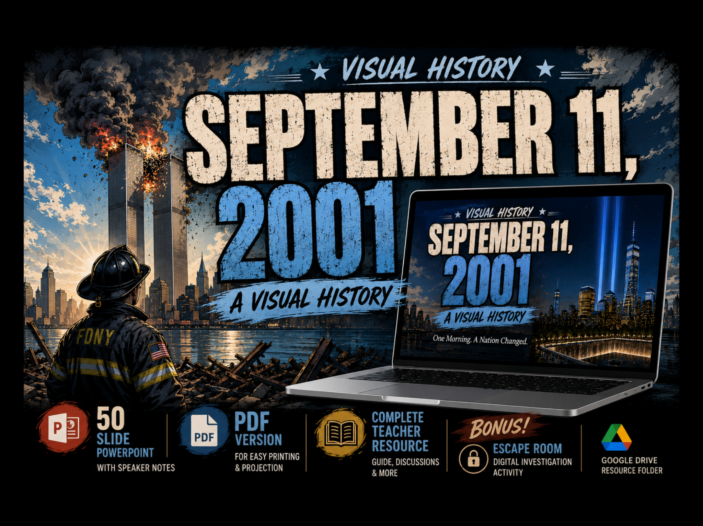

September 11, 2001: A Visual History
A single morning changed millions of lives. Understanding what happened requires a careful chronology, attention to the people involved, and respect for those who were killed and those who responded.

Historical inquiry: How can a timeline, eyewitness evidence, and official investigations help us understand a national tragedy without losing sight of the individuals whose lives were affected?
A coordinated terrorist attack
On September 11, 2001, nineteen hijackers affiliated with al-Qaeda seized four commercial passenger aircraft. Their coordinated attack targeted prominent American sites and killed nearly 3,000 people. Historical inquiry begins with the verified record of what happened, rather than with speculation or sensationalized imagery.
American Airlines Flight 11
Flight 11 struck the North Tower of the World Trade Center in New York City. Early news reports could not immediately establish the full nature of the disaster. The historical record became clearer as witnesses, emergency responders, aviation records, and investigators brought evidence together.
United Airlines Flight 175
Flight 175 struck the South Tower. By this point, millions of people were watching unfolding news coverage. At the scene, people inside the buildings and emergency responders were trying to escape, help others, or understand the rapidly changing danger.
American Airlines Flight 77
Flight 77 struck the Pentagon in Arlington, Virginia, killing passengers, crew members, military and civilian personnel. Responders worked amid dangerous conditions to search for survivors and address the damage.
The World Trade Center towers collapse
The South Tower collapsed at 9:59 a.m., followed by the North Tower at 10:28 a.m. The devastation affected occupants, first responders, families, and nearby communities. Both the immediate deaths and the long-term health consequences are important parts of this history.
United Airlines Flight 93
Flight 93 crashed in a field near Shanksville, Pennsylvania, after passengers and crew resisted the hijackers. It did not reach its intended target. Records of phone calls, the flight data, and the investigation help reconstruct events aboard the aircraft, while leaving room for respectful acknowledgment of what cannot be known in full.
The people behind the chronology
Dates and timestamps explain the sequence but not the whole human experience. Historians also consider survivors' accounts, the work of firefighters, police officers and medical personnel, the decisions of ordinary civilians, and the families who lost loved ones. People from many nations, occupations, and backgrounds were affected.
How historians establish what happened
Reliable reconstruction requires cross-checking different kinds of evidence: airline records, recordings, photographs, witness accounts, official reports, and physical findings. Individual memories may differ in details, especially during fast-moving crises. Responsible historical writing distinguishes those accounts from independently verified findings.
Think like a historian: Why might two people witnessing the same event remember different details? Which sources could help you test a disputed timeline?
Consequences and remembrance
The attacks transformed national security policy, international affairs, airport security, and public discussion about civil liberties. The United States launched military operations in Afghanistan later that year. Public memorials, museums, personal testimonies, and historical study preserve the stories of those who died and those whose lives changed.
Historical sources and further reading
Continue the lesson
Explore additional historical evidence and visual-history learning materials as they become available. The expanded classroom slide deck, Student Learning Companion, Teacher Guide, and source credits are being developed separately.